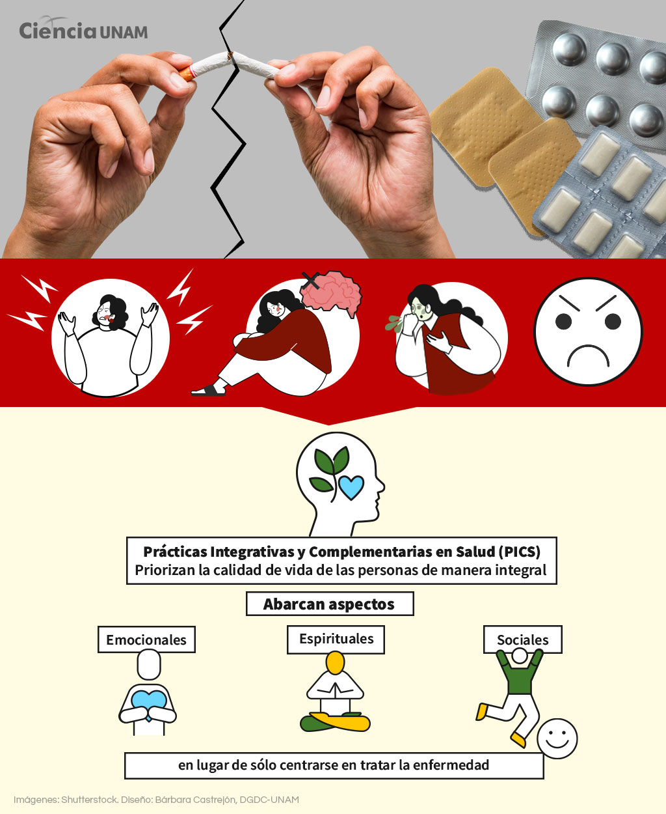
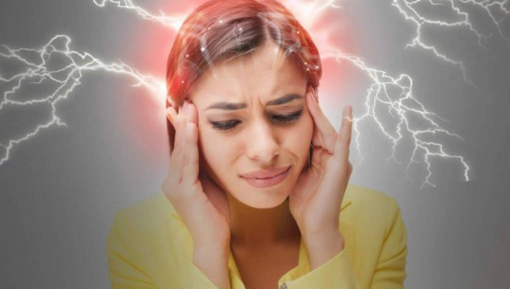

Efectos agudos
La nicotina aumenta ligeramente la frecuencia cardiaca, la presión arterial y la frecuencia respiratoria. Los fumadores pueden sentir aumento de la energía y una sensación de estar más despiertos, mayor capacidad de concentración, disminución de la tensión y la ansiedad y una sensación de placer y de recompensa. La náusea es común en la persona que está expuesta a la nicotina por primera vez. La nicotina reduce el apetito y puede reemplazar la conducta de comer.
Con el tabaco inhalado, la tolerancia al ejercicio tiende a disminuir debido a la irritación del tracto respiratorio. La intoxicación por monóxido de carbono de bajo grado también puede limitar la tolerancia al ejercicio, pero esto es probablemente sólo un factor en los deportistas de elite.
Toxicidad o sobredosis
La intoxicación aguda con nicotina generalmente es causada por la exposición oral (p. ej., niños que ingieren un cigarrillo o que mastican nicotina o que ingieren líquido del cigarrillo electrónico) o dérmica (p. ej., manipulación de productos crudos del tabaco), más que por fumar.
La toxicidad leve de nicotina, como es común con la enfermedad del tabaco verde e ingestiones menores por los niños (p. ej., < 1 cigarrillo o 3 colillas), por lo general se manifiesta con náuseas, vómitos, cefalea y debilidad. Los síntomas se resuelven espontáneamente, en 1 a 2 h después de la ingestión, si la intoxicación es leve; sin embargo, los síntomas pueden persistir durante 24 h, si la intoxicación es grave.
La intoxicación con nicotina grave provoca un síndrome tóxico colinérgico con náuseas, vómitos, salivación, lagrimeo, diarrea, micción, fasciculaciones y debilidad muscular. Los pacientes suelen tener dolor abdominal tipo cólico y, si la intoxicación es muy grave, arritmias, hipotensión, convulsiones y coma. La dosis mortal de nicotina es de aproximadamente 60 mg en adultos no fumadores, 120 mg en adultos que fuman y tan solo 10 mg en niños pequeños. Cada cigarrillo contiene aproximadamente 8 mg de nicotina (sólo cerca de 1 mg se absorbe al fumar).
Efectos crónicos
Las manifestaciones debido al consumo de tabaco en sí incluyen manchas amarillas en los dientes y los dedos y, en comparación con los controles de la misma edad, el peso es ligeramente inferior (diferencia ≤ 5 kg), la piel es más seca y más arrugada y el pelo es más fino.
Otros síntomas son los de las enfermedades pulmonares y cardiovasculares relacionadas con el hábito de fumar. La tos crónica y la disnea ante el esfuerzo son frecuentes. Las alteraciones circulatorias y respiratorias disminuyen la tolerancia al ejercicio, suele llevar a un estilo de vida más sedentario y por lo tanto una mayor disminución de la tolerancia al ejercicio.
Abstinencia
Dejar de fumar a menudo causa síntomas de abstinencia de nicotina intensos, sobre todo un deseo irrefrenable de cigarrillos, pero también otros síntomas (p. ej., ansiedad, dificultad para concentrarse, trastornos del sueño, depresión) y finalmente aumento de peso

| ANTES | SIGUIENTE | MENU |